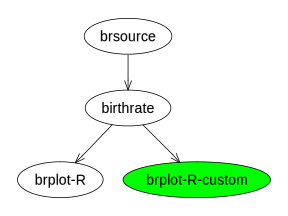
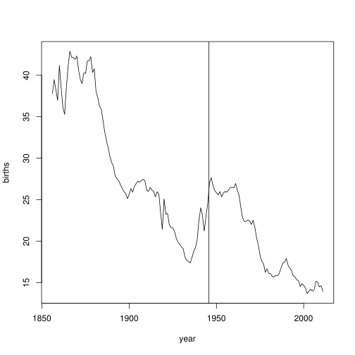
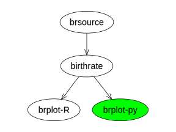
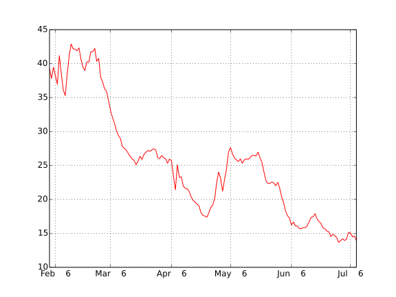
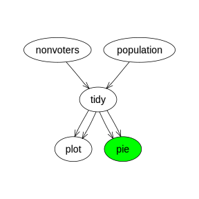

As conduit is still under active development, I have provided a tarball of the package as it was when this page was created.
install.packages("conduit_0.1-0-2014-09-19.tar.gz")
library(conduit)
birthrate <- loadPipeline("scripts/wikinz/birthrate-pipe.xml", "birthrate") runPipeline(birthrate) list.files("pipelines/birthrate/modules", recursive=TRUE)
## [1] "birthrate/birthrate.csv" "birthrate/script.R" ## [3] "brplot-R/birthrate-R.svg" "brplot-R/script.R"
library(gridGraphviz) library(gridSVG) gridsvg("birthrate-pipe.svg", width=4, height=3) grid.graph(agopenTrue(conduit:::graphPipeline(birthrate), "birthrate", attrs=list(node=list(shape="ellipse")))) dev.off()
birthrate_custom <- loadPipeline("scripts/wikinz/birthrate-pipe-custom.xml", "birthrate_custom") runPipeline(birthrate_custom) list.files("pipelines/birthrate_custom")
## [1] "modules"
gridsvg("birthrate-custom-pipe.svg", width=4, height=3) grid.graph(agopenTrue(conduit:::graphPipeline(birthrate_custom), "birthrate_custom", attrs=list(node=list(shape="ellipse")))) grid.edit("box-brplot-R-custom", gp=gpar(fill="green")) dev.off()


birthrate_python <- loadPipeline("scripts/wikinz/birthrate-pipe-python.xml", "birthrate_python") runPipeline(birthrate_python) list.files("pipelines/birthrate_python")
## [1] "modules"
library(gridSVG) gridsvg("birthrate-pipe-python.svg", width=4, height=3) grid.graph(agopenTrue(conduit:::graphPipeline(birthrate_python), "birthrate_python", attrs=list(node=list(shape="ellipse")))) grid.edit("box-brplot-py", gp=gpar(fill="green")) dev.off()


plotPipe <- loadPipeline("scripts/internetparty/plotPipe.xml", "plotPipe") library(gridSVG) gridsvg("plotPipe.svg", width=4, height=4) grid.graph(agopenTrue(conduit:::graphPipeline(plotPipe), "plotPipe", attrs=list(node=list(shape="ellipse")))) dev.off()
## Warning: one of more grobs overwritten (grab WILL not be faithful; try ## 'wrap = TRUE')
piePipe <- loadPipeline("scripts/internetparty/piePipe.xml") runPipeline(piePipe) list.files("pipelines/piePipe")
## [1] "modules"
library(gridSVG) gridsvg("piePipe.svg", width=4, height=4) grid.graph(agopenTrue(conduit:::graphPipeline(piePipe), "piePipe", attrs=list(node=list(shape="ellipse")))) grid.edit("box-pie", gp=gpar(fill="green")) dev.off()
## Warning: one of more grobs overwritten (grab WILL not be faithful; try ## 'wrap = TRUE')

reportPipe <- loadPipeline("scripts/internetparty/reportPipe.xml", "reportPipe") runPipeline(reportPipe) list.files("pipelines/reportPipe", recursive=TRUE)
## [1] "modules/calculate/script.R" ## [2] "modules/calculate/youngNonvotersPercent.rds" ## [3] "modules/plot/non-voters.svg" ## [4] "modules/plot/population.svg" ## [5] "modules/plot/script.R" ## [6] "modules/report/report.html" ## [7] "modules/report/script.R" ## [8] "modules/tidy/nonvoters.rds" ## [9] "modules/tidy/pop2013grouped.rds" ## [10] "modules/tidy/pop2013.rds" ## [11] "modules/tidy/script.R"
library(gridSVG) gridsvg("reportPipe.svg", width=4, height=4) grid.graph(agopenTrue(conduit:::graphPipeline(reportPipe), "reportPipe", attrs=list(node=list(shape="ellipse")))) dev.off()
## Warning: one of more grobs overwritten (grab WILL not be faithful; try ## 'wrap = TRUE')